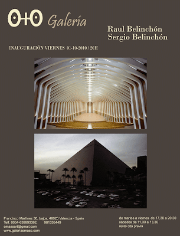
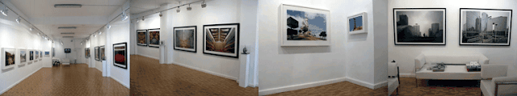
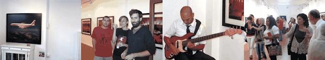
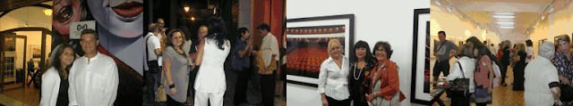

Raul y Sergio Belinchón: Exposición del 01-10 al 21-10-2010
viernes, 1 de octubre de 2010

(ver video)

{kind=link}
SERGIO BELINCHÓN - RAÚL BELINCHÓN
Del - 1 de Octubre al - 31 de Octubre 2010
Inauguración -1 de Octubre a las 20:00 h.
La Galería O+O comienza la temporada con la primera exposición que realizan juntos los hermanos Sergio y Raúl Belinchón. Una muestra fotográfica de dos de los artistas, nacidos en Valencia, con más proyección internacional. Sergio Belinchón (1971) presenta fotografías pertenecientes a su serie Paraíso, mientras que Raúl Belinchón (1975) expone su serie Patio de Butacas.
{kind=link}

{kind=link}

{kind=link}

Sergio, vive y trabaja en Berlín. Su obra se encuentra en colecciones como la del Museo Nacional Reina Sofía, Ministerio de Educación, Ministerio de Asuntos Sociales, Fundación Coca-Cola, Ordóñez Falcón, Museo Artium, Musac, Caja Madrid, Fisher los Angeles USA, Fonds National d'Art Contemporain France, CAAC, Patio Herreriano, entre otras. Raúl, a punto de inaugurar exposición en el Museo Nacional Do Conjunto Cultural Da Republica de Brasilia,con la Fundación Miró, cuenta con obra en las colecciones del Ivam, Museo Nacional Reina Sofía, Ordóñez Falcón, Colección DKV, Fundación Unicaja, Comunidad de Madrid, Centro de Fotografía de Tenerife, Ministerio de Cultura, Fundación Cajasol, Fundación Vila Casas, entre otras.
Tanto Sergio como Raúl, han obtenido premios y Becas nacionales e internacionales más importantes.
A través de la serie PARAÍSO(2003), Sergio Belinchón, muestra la farsa del paraíso urbano. Capta los paisajes bellamente falseados donde son recreados grandes hitos de la historia de la arquitectura, a modo de reproducciones falsas de los mismos. Estas réplicas postmodernas, encargadas con la intención de re-construir un entorno paradisíaco a la medida del hombre, son fotografiadas como si se trataran de sus originales correspondientes, en un juego de engaño de la imagen fotográfica como obra de arte.
El trabajo del fotógrafo Sergio Belinchón basado en la investigación urbana muestra la colonización de la naturaleza por parte del ser humano, a través de la expansión sin límites del entorno urbano en el que éste habita. Por medio de una óptica limpia y carente de decorativismo como lenguaje expresivo, presenta entornos y arquitecturas ficticias construidas para escapar de la realidad. En nuestro mundo contemporáneo la construcción del paraíso ficticio nos rodea (televisión y revistas). Todo se ha convertido en un inmenso parque de atracciones, donde cada partícipe quiere observar y ser observado, consumir y consumir, y por lo tanto, necesita una dosis extra de ficción que ofrezca una contemplación idílica, pero no real.
La fotografía aporta una porción de realidad a la falsificación. El resultado de las fotografías de "vistas falsificadas" no es muy diferente de las tomadas por los turistas en centros históricos o naturales. Sin duda nos encontramos ante una de las muchas paradojas del mundo contemporáneo.
PATIO DE BUTACAS (2005-2006) de Raúl Belinchón es un trabajo fotográfico sobre interiores de espacios arquitectónicos. Es un recorrido por los diferentes cines, teatros y auditorios de ciudades del mundo. De Moscú a París, de Londres a Madrid, de Tokio a Milán, De San Petersburgo a Barcelona, de Osaka a Valencia, pasando por los teatros de Broadway en Nueva York. Salas antiguas y modernas, distintas formas y tipologías. Otra manera de mirar los teatros, sin espectadores, sin actores, resaltando sus pequeños y característicos detalles.
Raúl observa el espacio fuera de su uso habitual, donde cobra una dimensión diferente en la que su arquitectura con todos sus detalles estructurales y estéticos pasan a ser protagonistas. La gran mayoría de las imágenes están tomadas desde un mismo punto de vista, desde el escenario hacia el patio de butacas. Obteniendo así, unos resultados mucho más sugerentes, abstractos e irreales y logrando una uniformidad del conjunto de las imágenes seleccionadas. Resaltar el punto de vista que tiene el actor o músico cuando sube a un escenario, es mucho más inquietante e inusual, que el que pueda tener un espectador que va a ver un espectáculo o un film.
Un trabajo sobre la gente, la masa y lo colectivo, pero sin mostrar físicamente al individuo. Hay una ausencia de presencia humana para potenciar otros muchos valores (sueños e imaginación, frente a lo real y cotidiano). La ausencia de público es innegable, pero cada butaca hace referencia a una persona o a miles de personas que pasaron por allí. El mar de butacas es como un cementerio de almas que tiempo atrás estuvieron allí inmóviles, sumergiéndose en la oscuridad y el silencio colectivo, para dar paso a la experiencia individualizada.